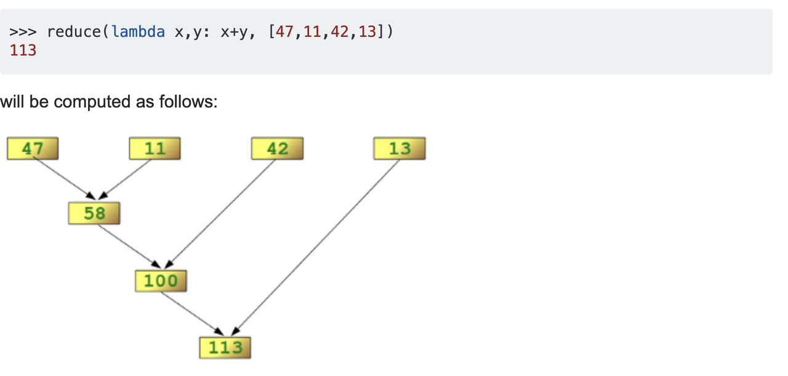
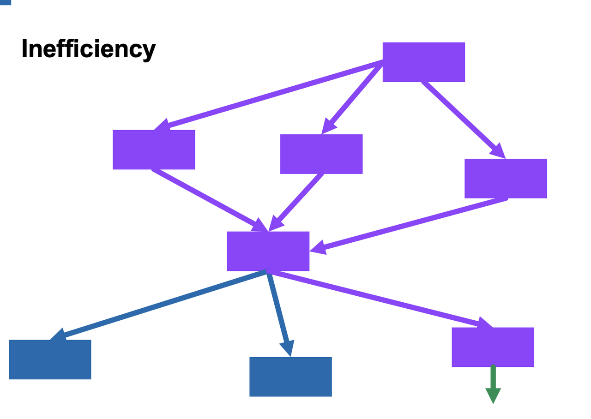

RDDs Transformations and Actions
This post continues the discussion started a few times ago on RDD and Spark.
I will try to go here in the lifecycle of an RDD and will present the major Transformation and Actions functions. I will moreover touch on the physical implementation of Spark as this will give you the mental tools to properly understand how to properly structure your Spark workflow in order to optimize the performance.
On RDDs
A brief overview on RDDs was given in the previous post and you are referred to it for a brief introduction.
RDDs are lazy. This, means that only if the data is needed for a certain computation the data is read from the underlying storage system.
An RDD in Spark is simply an immutable distributed collection of objects. Each RDD can be split into multiple partitions, which may be computed on different nodes of the cluster.
The typical RDD lifecycle is as follows:
- An RDDs is first created from stable storage or by some Python objects.
RDDs offer then two types of operations: transformations and actions.
- Transformations create a new RDD from an existing one. Transformations are lazy, meaning that no transformation is executed until you execute an action.
- Actions compute a result based on an RDD, and either return it to the driver program or save it to an external storage system (e.g., HDFS). This is the end of the lifecycle.
Transformations and actions are different because of the way Spark computes RDDs. Although you can define new RDDs any time, Spark computes them only in a lazy fashion, that is, the first time they are used in an action.
For the creation of RDDs and the partitions of them please refer to the previous post I will now briefly introduce the physical execution of spark before illustrating some of the most the key transformations and actions.
Transformations
Following are examples of some of the common transformations available.
For a detailed list, see RDD Transformations
Run some transformations below to understand this better.
Note: If some of the queries are taking too long to complete, try restarting the kernel, and rerunning the cell above.
from pyspark.sql import SparkSession
spark = SparkSession \
.builder \
.master ("local[8]") \
.appName("My first Spark Session") \
.getOrCreate()
sc = spark.sparkContext
fruits = sc.textFile('file:///Users/marcohassan/Desktop/spark_files_data/fruit.txt')
fruits.collect()
['Peaches', 'Apples', 'Strawberries', 'Grapes', 'Oranges', 'Apples', 'Peaches', 'Melon']
On the filter transformation
A further important transformation is the one allowing the projection
in relational algebra terms. This is taken care by the filter
transformation.
It just projects the RDDs objects satisfying the given criteria of
the boolean function specified within the filter.
# filter
shortFruits = fruits.filter(lambda fruit: len(fruit) <= 5)
shortFruits.collect()
['Melon']
shortFruits = fruits.filter(lambda fruit: fruit.lower() == "oranges")
shortFruits.collect()
['Oranges']
On the Map Transformation
The map function takes each element for the RDD and applies a
function mapping the element input to a transformed new RDD. It is
therefore an action.
# map
fruitsReversed = fruits.map(lambda fruit: fruit[::-1]) ## the fruit[::-1] inverts the letters of the word
# Note: the `collect` command is NOT a Transformation, it is an Action
# used here for the purposes of showing the results! Just use it when
# you know that the action will be small enough to be handled by the
# memeory of the machine you are working on. Otherwise, no chance you
# will be able to display your results and you will better have to
# save the results on a HDFS cluster.
fruitsReversed.collect()
['sehcaeP', 'selppA', 'seirrebwartS', 'separG', 'segnarO', 'selppA', 'sehcaeP', 'noleM']
# map
fruitsReversed = fruits.map(lambda fruit: fruit + "bau" * 3)
fruitsReversed.collect()
['Peachesbaubaubau', 'Applesbaubaubau', 'Strawberriesbaubaubau', 'Grapesbaubaubau', 'Orangesbaubaubau', 'Applesbaubaubau', 'Peachesbaubaubau', 'Melonbaubaubau']
On the FlatMap Function
The flatmap transformation extends the map function giving the
possibility to the users to return an object of higher dimension than
the map input and then flattening it in one go.
Important is to understand that here the object is flattened and saved into a new RDD. So that you won't notice the different map output when observing the transformed RDD. I.e. you won't have different subsets indicating the higher dimensional objects returned by your flatmap.
# flatMap
characters = fruits.flatMap(lambda fruit: list(fruit))
characters.collect()
['P', 'e', 'a', 'c', 'h', 'e', 's', 'A', 'p', 'p', 'l', 'e', 's', 'S', 't', 'r', 'a', 'w', 'b', 'e', 'r', 'r', 'i', 'e', 's', 'G', 'r', 'a', 'p', 'e', 's', 'O', 'r', 'a', 'n', 'g', 'e', 's', 'A', 'p', 'p', 'l', 'e', 's', 'P', 'e', 'a', 'c', 'h', 'e', 's', 'M', 'e', 'l', 'o', 'n']
Notice how this stays in contrast to a simple map performing the same operation.
characters = fruits.map(lambda fruit: list(fruit))
characters.collect()
[['P', 'e', 'a', 'c', 'h', 'e', 's'], ['A', 'p', 'p', 'l', 'e', 's'], ['S', 't', 'r', 'a', 'w', 'b', 'e', 'r', 'r', 'i', 'e', 's'], ['G', 'r', 'a', 'p', 'e', 's'], ['O', 'r', 'a', 'n', 'g', 'e', 's'], ['A', 'p', 'p', 'l', 'e', 's'], ['P', 'e', 'a', 'c', 'h', 'e', 's'], ['M', 'e', 'l', 'o', 'n']]
On the Union Transformation
This returns the classical relational algebra union of two different RDDs.
yellowThings = sc.textFile('file:///Users/marcohassan/Desktop/spark_files_data/yellow.txt')
# union
fruitsAndYellowThings = fruits.union(yellowThings)
fruitsAndYellowThings.collect()
['Peaches', 'Apples', 'Strawberries', 'Grapes', 'Oranges', 'Apples', 'Peaches', 'Melon', 'giallo', 'biondo', 'yellow', 'gelb', 'gold', 'blond', 'jeune']
On the intersection Transformation
This returns the intersection for two RDDs. It is then clear that it is possible to obtain the relational algebra set difference from it.
# intersection
yellowFruits = fruits.intersection(yellowThings)
yellowFruits.collect()
[]
echo "Oranges" >> /Users/marcohassan/Desktop/spark_files_data/yellow.txt
yellowFruits = fruits.intersection(yellowThings)
yellowFruits.collect()
['Oranges']
Get the set difference, i.e. the objects present in a RDD but not in the other
a = yellowFruits.collect()
fruit = fruits.filter(lambda x: x not in a)
fruit.collect()
['Peaches', 'Apples', 'Strawberries', 'Grapes', 'Apples', 'Peaches', 'Melon']
On the distinct transformation
This allows to take the distinct objects in an RDD
# distinct
distinctFruitsAndYellowThings = fruitsAndYellowThings.distinct()
distinctFruitsAndYellowThings.collect()
['Peaches', 'Apples', 'Oranges', 'giallo', 'gelb', 'blond', 'Strawberries', 'jeune', 'Melon', 'biondo', 'yellow', 'gold', 'Grapes']
On the Reduce Transformation
The reduce function is powerful albeit its logic is not straight. You will have to exercise it at first. Its logic is as follows

input_list = sc.parallelize(range(5))
print(input_list.collect())
print(input_list.map(lambda x: x ** 3).collect())
sum_of_cubes = input_list.map(lambda x: x ** 3).reduce(lambda x, y: x + y)
product_of_cubes = input_list.map(lambda x: x ** 3).reduce(lambda x, y: x * y)
print("\nsum of cubes %s:" % sum_of_cubes)
print("product of cubes %s:" % product_of_cubes)
[0, 1, 2, 3, 4] [0, 1, 8, 27, 64] sum of cubes 100: product of cubes 0:
On the Sort By Transformation
Notice that for sorting multiple elements through the spark API you should pack them into a single array.
entries.filter (lambda x: x["guess"] == x["target"]).sortBy (lambda x: [x["target"], x["country"], x["date"] ] , 1).take (5)
Notice how the final element states if it should be ascending or descending.
On Joins Transformation Syntax
heroes.show()
+--------+---+ | name| id| +--------+---+ |Deadpool| 3| |Iron man| 1| | Groot| 7| +--------+---+
races.show()
+----------+---+ | race| id| +----------+---+ |Kryptonian| 5| | Mutant| 3| | Human| 1| +----------+---+
heroes.join(races, on='id', how='inner').show()
+---+--------+------+ | id| name| race| +---+--------+------+ | 1|Iron man| Human| | 3|Deadpool|Mutant| +---+--------+------+
Working with key-value pairs
Spark provides special operations on RDDs containing key/value pairs. These RDDs are called pair RDDs. Pair RDDs are a useful building block in many programs, as they expose operations that allow you to act on each key in parallel or regroup data across the network.
Group by Key
Notice that in spark, in contrast to MapReduce, the input must not be of key-value store type. But if you are dealing with key-value pairs objects such as hash-tables then there are plenty of functions that will help you to deal with and operate at the key level.
One prominent example for the above is the groupByKey that allows
you to perform a given function for each key.
To understand that look at the following transformation
yellowThingsByFirstLetter = yellowThings.map(lambda thing: (thing[0], thing)).groupByKey()
print(yellowThingsByFirstLetter.collect())
[('g', <pyspark.resultiterable.ResultIterable object at 0x119ff27d0>), ('b', <pyspark.resultiterable.ResultIterable object at 0x119ff2490>), ('y', <pyspark.resultiterable.ResultIterable object at 0x119ff2550>), ('j', <pyspark.resultiterable.ResultIterable object at 0x119ff25d0>), ('O', <pyspark.resultiterable.ResultIterable object at 0x119ff2290>)]
The above returned a set of tuples involving a key being the first
letter and a value being an iterable spark object on which it is
possible to perform the desired function.
Notice that above we first applied a function generating our key-value tuple
print(yellowThings.map(lambda thing: (thing[0], thing)).collect())
[('g', 'giallo'),
('b', 'biondo'),
('y', 'yellow'),
('g', 'gelb'),
('g', 'gold'),
('b', 'blond'),
('j', 'jeune'),
('O', 'Oranges')]
and then grouping based on the keys of such newly transformed RDD.
For the function you can apply, you can be as imaginative as you want
# groupByKey
yellowThingsByFirstLetter = yellowThings.map(lambda thing: (thing[0], thing)).groupByKey()
for letter, lst in yellowThingsByFirstLetter.collect():
print("For letter", letter)
for obj in lst:
print(" > ", obj)
For letter g > giallo > gelb > gold For letter b > biondo > blond For letter y > yellow For letter j > jeune For letter O > Oranges
a = [1,2,3,4]
list(map(lambda x: x+1, a))
[2, 3, 4, 5]
print(yellowThingsByFirstLetter.map(lambda x : (x[0], list(x[1]))).collect())
print(yellowThingsByFirstLetter.map(lambda x : (x[0], [i + " " + i for i in list(x[1])] )).collect())
## notice finally that maps exists in python also outside of spark
## with the following syntax map(function, iterable object)
## it is clear therefore that you can do games such as
print(yellowThingsByFirstLetter.map(lambda x : (x[0], list(map(lambda y: y*2, list(x[1]))))).collect())
[('g', ['giallo', 'gelb', 'gold']), ('b', ['biondo', 'blond']), ('y', ['yellow']), ('j', ['jeune']), ('O', ['Oranges'])]
[('g', ['giallo giallo', 'gelb gelb', 'gold gold']), ('b', ['biondo biondo', 'blond blond']), ('y', ['yellow yellow']), ('j', ['jeune jeune']), ('O', ['Oranges Oranges'])]
[('g', ['giallogiallo', 'gelbgelb', 'goldgold']), ('b', ['biondobiondo', 'blondblond']), ('y', ['yellowyellow']), ('j', ['jeunejeune']), ('O', ['OrangesOranges'])]
On the Mapvalues Transformation
Mapvalues operates on PairRDDs, i.e. data of the key-value form,
meaning RDDs of the form RDD[(A, B)]. In that case, mapValues
operates on the value only (the second part of the tuple), while map
operates on the entire record (tuple of key and value).
print("Original data: %s" % numFruitsByLength.collect())
print("Mapvalued data: %s" % numFruitsByLength.mapValues(lambda x: x*3).collect())
Original data: [(4, 2), (5, 2), (6, 4)] Mapvalued data: [(4, 6), (5, 6), (6, 12)]
Notice that this might reduce by a product the complexity of your code. Think for instance at:
aba = sc.parallelize([("hel", 7), ("hel", 9), ("bye", 5), ("bye", 1), ("bye", 1)])
print("Number per key: %s" % aba.groupByKey().map(lambda x : (x[0], len(list(x[1])))).collect())
# vs.
print("Number per key: %s" % abba.groupByKey().mapValues(len).collect())
Number per key: [('hel', 2), ('bye', 3)]
Number per key: [('hel', 2), ('bye', 2)]
On the Reduce by Key Transformation
Given the above understanding of the Reduce transformation it is clear that the reduce by key is essentially a reduce function on each of the key iterable values.
fruits = sc.parallelize(["apple", "orange", "java", "call++"])
numFruitsByLength = fruits.map(lambda fruit: (len(fruit), 2))
print("Data : %s" % numFruitsByLength.collect())
numFruitsByLength = numFruitsByLength.reduceByKey(lambda x, y: x + y)
print("Sum value by keys: %s" % numFruitsByLength.collect())
Data : [(5, 2), (6, 2), (4, 2), (6, 2)] Sum value by keys: [(4, 2), (5, 2), (6, 4)]
Actions
As mentioned above Actions compute a result based on an RDD, and either return it to the driver program or save it to an external storage system (e.g., HDFS). This is the end of the lifecycle.
The most prominent example of an action is collect(). Important is
however to keep in mind that this should be used only when you are
sure that your local hardware might be able to deal with the
collected RDD. We are dealing with Big Data and therefore your
operations should have compressed enough your problem so that you
might able to collect something in a meaningful way. The alternative,
to save to HDFS might be otherwise necessary.
Following are examples of some of the common actions available. For a detailed list, see RDD Actions.
Count
# count
print("Data: %s" % fruits.collect())
numFruits = fruits.count()
numFruits
Data: ['apple', 'orange', 'java', 'call++'] 4
Take
This might be especially useful also given the issues when dealing
with collect() mentioned above.
It is essentially the LIMIT function of SQL
# take
first3Fruits = fruits.take(3)
first3Fruits
['apple', 'orange', 'java']
Aggregate
This is again a tricky one. Please refer to the link: Explaination of Aggregate.
seqOp = (lambda local_result, list_element: (local_result[0] + list_element, local_result[1] + 1) )
combOp = (lambda some_local_result, another_local_result: (some_local_result[0] + another_local_result[0], some_local_result[1] + another_local_result[1]) )
sc.parallelize([1, 2, 1, 2]).aggregate((0, 0), seqOp, combOp)
(6, 4)
Persistence (Caching)
Spark's RDDs are by default recomputed each time you run an action on them.
This is however suboptiomal. Just think of the following situation:
Then it is clear that no matter the final RDD transformation, you will have to do the same set of operations. In such a case recomputing the entire DAG makes no sense and persisting the result that is continuously used makes sense.
This is done using RDD.persist(). After computing it the first time,
Spark will store the RDD contents in memory (partitioned across the
machines in your cluster), and reuse them in future actions.
Persisting RDDs on disk instead of memory is also possible.
If you attempt to cache too much data to fit in memory, Spark will
automatically evict old partitions using a Least Recently Used (LRU)
cache policy. This practically means, that for the memory-only
storage levnels, it will recompute these partitions the next time they
are accessed, while for the memory-and-disk ones, it will write them
out to disk. In either case, this means that you don't have to worry
about your job breaking if you ask Spark to cache toxo much
data. However, caching unnecessary data can lead to eviction of useful
data and more recomputation time. Finally, RDDs come with a method
called unpersist() that lets you manually remove them from the
cache.